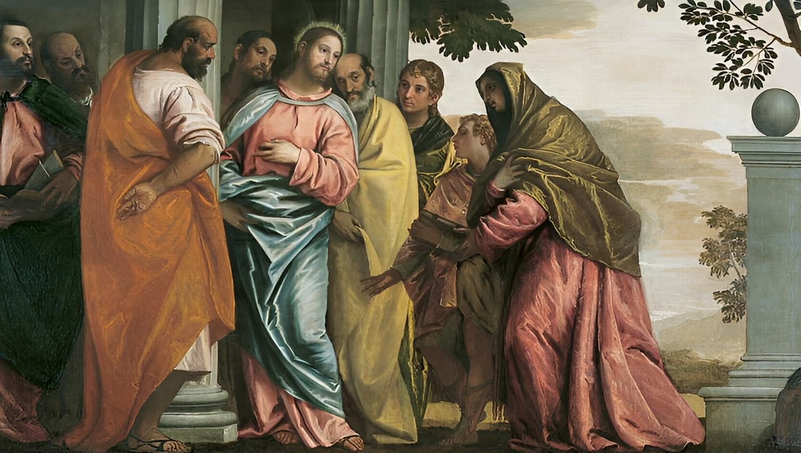

A Mother's Request
Then came to him the mother of Zebedees children with her sons, worshipping him, and desiring a certain thing of him.
And he said unto her, What wilt thou? She saith unto him, Grant that these my two sons may sit, the one on thy right hand, and the other on the left, in thy kingdom.
But Jesus answered and said, Ye know not what ye ask. Are ye able to drink of the cup that I shall drink of, and to be baptized with the baptism that I am baptized with? They say unto him, We are able.
And he saith unto them, Ye shall drink indeed of my cup, and be baptized with the baptism that I am baptized with: but to sit on my right hand, and on my left, is not mine to give, but it shall be given to them for whom it is prepared of my Father.
And when the ten heard it, they were moved with indignation against the two brethren.
But Jesus called them unto him, and said, Ye know that the princes of the Gentiles exercise dominion over them, and they that are great exercise authority upon them.
But it shall not be so among you: but whosoever will be great among you, let him be your minister;
And whosoever will be chief among you, let him be your servant:
Even as the Son of man came not to be ministered unto, but to minister, and to give his life a ransom for many.
Matthew 20:20-28
